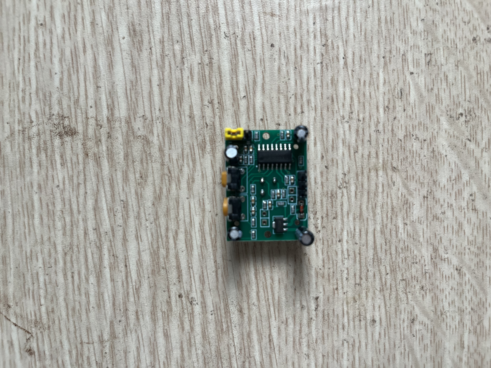

P7 Servo + biến trở
Xoay biến trở để điều khiển góc servo SG90 từ khoảng 0 đến 180 độ.
An toàn
Servo SG90 dùng 5V và dòng cao hơn LED. Nối GND servo chung với GND ESP32; không cấp servo từ chân 3.3V.
Ảnh linh kiện



Nối dây gợi ý
| Linh kiện | Nối tới | Ghi chú |
|---|---|---|
| Servo đỏ | 5V | Nguồn servo. |
| Servo nâu | GND | GND chung ESP32. |
| Servo cam/vàng | GPIO 18 | Signal PWM. |
| Biến trở chân giữa | GPIO 34 | ADC đọc góc. |
| Biến trở 2 đầu | 3V3 và GND | Không dùng 5V cho ADC. |
Các bước làm
- Test servo quét 0-180 độ trước.
- Thêm biến trở và đọc ADC.
- Map ADC sang góc servo.
- Nếu ESP32 reset khi servo chạy, đổi sang nguồn 5V ngoài mạnh hơn.
Hoàn thành khi
- Servo quay theo biến trở ổn định, không giật/reset board.
- Bạn biết servo cần nguồn riêng hơn LED vì tải cơ khí cần dòng lớn.